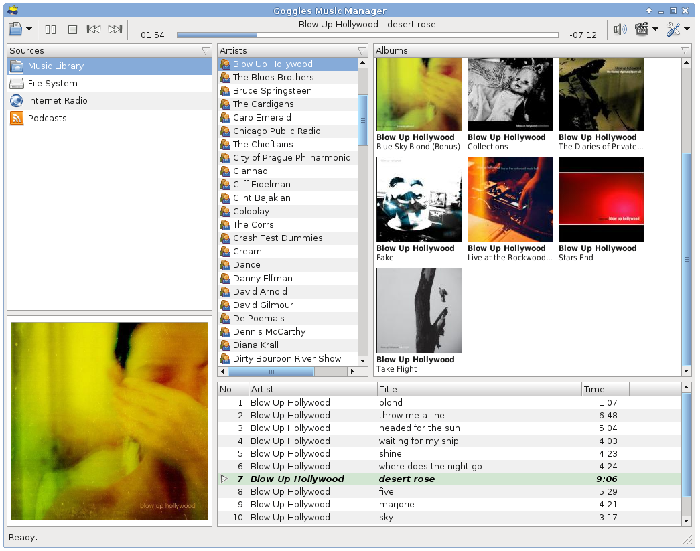

Goggles Music Manager
Music Player For Linux
Downloads
Bug Reports
Wiki
Source
AudioConvert


Welcome to the homepage of Goggles Music Manager.

Features
- Fast and light weight. Quick startup, no splash screen needed!
- Supports Ogg Vorbis ,Opus, FLAC, MP3 and MP4
- Gapless playback and Replay Gain support (Ogg Vorbis, Opus, FLAC and mp3 with APE tags).
- Support for cover art embedded in tag or as separate file on disk.
- Subscribe to Podcasts (rss) using the buildin podcast manager.
- Tag editing and powerfull file renaming capability.
- Filters / Smart Playlists
- Smart sorting with user configurable leading word filter to prevent sorting on common words like the, a or an.
- Support for play lists. Play lists may be played in a certain configurable order, or browsed through like the main music library.
- Import/Export music library and play lists to XSPF,PLS,Extended M3U,M3U and CSV.
- Clipboard & DND (drag-and-drop) support to arrange playlists and dragging to and from gnome / kde applications.
- Clean and fast database backend using SQLite 3.
- Written using FOX, one of the fastest GUI toolkits available.
- Last.fm and libre.fm audio scrobbler support.
- Translated in Czech, French, German, Hungarian, Portuguese, Russian and Spanish.
Articles and Reviews
"Keeping it simple is probably GMM's biggest selling point"
- Andy Hudson in Linux Format Issue 123, October 2009
Scratching that itch: Sander Jansen
- Joe Barr on Linux.com / Newsforge- June 2006
"Goggles is my candidate for a lightweight music player"
- Bruce Byfield on Linux Magazine Blog